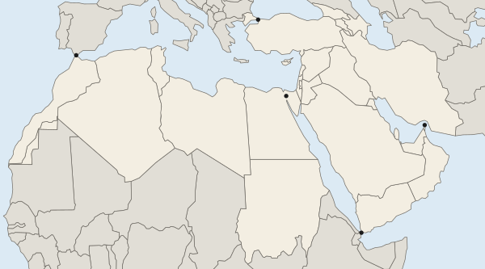

Political Power and Territoriality
Political power means control over people, land, resources and routes.
Part 1 · Hook
Why this matters
Part 2 · Before you start
What this builds on
Part 3 · Prerequisite check
Quick check before you start
1. What is sovereignty?
- A state's right and power to govern its territory without outside control
- A people's shared culture
- The right of a people to choose its status
- A part of a state with its own powers
Show the answer
Sovereignty belongs to states; self-determination to peoples.
- Correct: A state's right and power to govern its territory without outside control:
- A people's shared culture:
- The right of a people to choose its status:
- A part of a state with its own powers:
2. What is colonialism?
- Direct control, and often settlement, of a territory by an outside power
- A people's right to choose its status
- A state with many nations
- The spread of a culture by migrants
Show the answer
Colonialism is direct rule from outside.
- Correct: Direct control, and often settlement, of a territory by an outside power:
- A people's right to choose its status:
- A state with many nations:
- The spread of a culture by migrants:
Part 4 · See it
See it first

Part 5 · Step by step
How it works, step by step
- People, groups and states claim and mark areas of land and seathey control who and what can enter or use those areas (territoriality)
- A state controls a narrow sea passage that many ships must useit gains power over trade that passes through, so the passage is a choke point
- A region sits between stronger outside powers and is divided insideoutside powers compete there and conflict is common, making it a shatterbelt
Part 6 · Key ideas
Key ideas
- Political power is control over people, land and resources. Territoriality is the attempt to control people and things by claiming an area: a fence, a city sign, a guarded border.
- Do not mix them up: a territory is the area, territoriality is the claiming, sovereignty is a state's recognized right to rule.
- Neocolonialism is influence over former colonies through money, trade or loans, without direct rule.
- A choke point is a narrow passage many ships must use (Suez, Hormuz, Malacca). A shatterbelt is a region caught between outside powers (Eastern Europe in the Cold War).
Part 7 · Misconception
A common mistake
The wrong idea: Territoriality and sovereignty mean the same thing: if a state puts its flag on a place, it rules it.
What actually happens: Territoriality is the act of claiming and marking an area. Sovereignty is a right other states recognize. A flag on the Arctic seabed (Russia, 2007) is territoriality, not sovereignty.
Part 8 · Check yourself
Check yourself
Exam-style questions. Anything you miss goes into your review queue.
Map
Five narrow sea passages

1. Ships from ports on the Black Sea must pass which mark to reach the Mediterranean Sea?
- Mark B
- Mark A
- Mark C
- Mark D
Show the answer
The Black Sea connects to the Mediterranean through the Bosporus and the Dardanelles in Türkiye (mark B).
- Correct: Mark B: Right: Mark B is the Bosporus at Istanbul, Türkiye, the only sea link between the Black Sea and the Mediterranean.
- Mark A: Mark A is the Strait of Gibraltar, between the Mediterranean and the Atlantic.
- Mark C: Mark C is the Suez Canal, between the Mediterranean and the Red Sea.
- Mark D: Mark D is at the southern end of the Red Sea, far from the Black Sea.
2. Oil tankers leaving the Persian Gulf (called the Arabian Gulf in many Arab states) have to pass which choke point?
- Mark A
- Mark C
- Mark D
- Mark E
Show the answer
The Strait of Hormuz (mark E), between Iran and Oman, is the one sea route out of the gulf.
- Mark A: Gibraltar is far to the west, at the mouth of the Mediterranean.
- Mark C: The Suez Canal links the Red Sea and the Mediterranean, not the gulf.
- Mark D: Tankers reach the Red Sea route only after leaving the gulf.
- Correct: Mark E: Right: Mark E is the Strait of Hormuz, the narrow mouth of the gulf.
3. Ships sailing between East Asia and ports on the Mediterranean Sea by the shortest sea route pass which two marks?
- Marks A and B
- Marks B and E
- Marks C and D
- Marks D and E
Show the answer
From the Indian Ocean, ships enter the Red Sea through the Bab el-Mandeb strait at mark D, sail north and pass the Suez Canal at mark C into the Mediterranean.
- Marks A and B: Those link the Mediterranean to the Atlantic and the Black Sea, off the route from Asia.
- Marks B and E: The Black Sea and the gulf are dead ends for this trip.
- Correct: Marks C and D: Right: Ships enter the Red Sea at its southern strait and leave it through the Suez Canal.
- Marks D and E: Hormuz leads into the gulf, which is a dead end for this trip.
4. What is territoriality?
- The right of a state to rule without outside control
- Trying to control people and things by claiming an area
- The area of land and sea a state rules
- The spread of a culture from its hearth
Show the answer
Territoriality is the attempt by a person, group or state to influence or control people and things by claiming control over an area. Territory is the area; sovereignty is a state's right to rule it.
- The right of a state to rule without outside control: That is sovereignty, a state's right.
- Correct: Trying to control people and things by claiming an area: Right: Territoriality ties people, power and culture to a piece of land.
- The area of land and sea a state rules: That is a territory, the area itself.
- The spread of a culture from its hearth: That is diffusion.
5. A state builds border posts, flies its flag on a disputed island and renames places with its own words. Which concept do these actions show most directly?
- Sovereignty, because putting up a flag gives full legal rule
- Self-determination, because the state chose to act alone
- A territory, because any land with a flag counts as one
- Territoriality
Show the answer
Students often mix up territoriality, sovereignty and territory. Territoriality is the behavior: marking and claiming control. Sovereignty is the recognized right to rule.
- Sovereignty, because putting up a flag gives full legal rule: Raising a flag does not by itself make legal rule; that depends on recognition.
- Self-determination, because the state chose to act alone: Self-determination is a people's right to choose its government.
- A territory, because any land with a flag counts as one: A territory is the area itself, not the acts of claiming it.
- Correct: Territoriality: Right: These are acts of claiming and marking control over an area.
6. During the Cold War (about 1947 to 1991), Eastern Europe sat between the Soviet Union and Western Europe, and its states were pulled between the two sides. Which concept describes such a region?
- A shatterbelt
- A choke point
- A nation-state
- An autonomous region
Show the answer
A shatterbelt is a region, often split by culture or politics inside, that is caught between the pressures of stronger outside powers, so conflict is common. Eastern Europe in the Cold War is a common example.
- Correct: A shatterbelt: Right: A region caught between stronger outside powers, often divided inside, is a shatterbelt.
- A choke point: A choke point is a narrow passage, not a large region.
- A nation-state: A nation-state is one nation in one state.
- An autonomous region: An autonomous region governs some of its own affairs inside one state.
Part 9 · Summary
Summary
Part 10 · Up next
What comes next
Part 11 · Connections